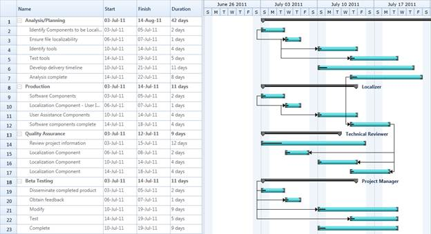

Essential Gantt for Silverlight allow you to bind any type of IEnumerable source to Gantt.You can bind any collection to Gantt using the TaskAttributeMapping class. This will get the mapping name of the requied fields from the underlying soruce. With this mapping the Gantt will get the required information to render the Chart nodes .
The following code illustrate how to map the properties using the TaskAttributeMapping class:
|
[XAML]
|
|
[C#] TaskAttributeMapping attributes = new TaskAttributeMapping();
|
The following code illustrates how to bind the external source to Gantt control:
|
[XAML] <Sync:GanttControl x:Name="Gantt" ItemsSource="{Binding GanttItemSource}">
|
|
[C#] //Initializing Gantt ViewModel model= new ViewModel();
TaskAttributeMapping attributes = new TaskAttributeMapping();
Gantt.TaskAttributeMapping = attributes; Gantt.ItemsSource = model.GanttItemSource;
|
|
[C#] GanttItemSource = new ObservableCollection<Task>(); GanttItemSource = GetDataSourceStartToStart();
ObservableCollection<Task> GetDataSourceStartToStart()
Name = "Scope", StartDate = new DateTime(2011, 1, 3), EndDate = new DateTime(2011, 1, 14),
Progress = 40d }); Name = "Determine project office scope", StartDate = new DateTime(2011, 1, 3), EndDate = new DateTime(2011, 1, 5),
Progress = 20d }); Name = "Justify Project Offfice via business model", StartDate = new DateTime(2011, 1, 6), EndDate = new DateTime(2011, 1, 7),
Progress = 20d }); Name = "Secure executive sponsorship", StartDate = new DateTime(2011, 1, 10), EndDate = new DateTime(2011, 1, 14), Progress = 20d }); task[0].ChildTask.Add(new Task { Id = 5, Name = "Secure complete", StartDate = new DateTime(2011, 1, 14), EndDate = new DateTime(2011, 1, 14), Progress = 20d }); return task; } |

Figure 17: External Property Binding
Samples Link
To view samples:
1. Select Start -> Programs -> Syncfusion -> Essential Studio x.x.xx -> Dashboard.
2. Click Run Samples for Silverlight under User Interface Edition panel .
3. Select Gantt.
4. Expand the DataBinding Features item in the Sample Browser.
5. Choose the External Property Binding samples to launch.